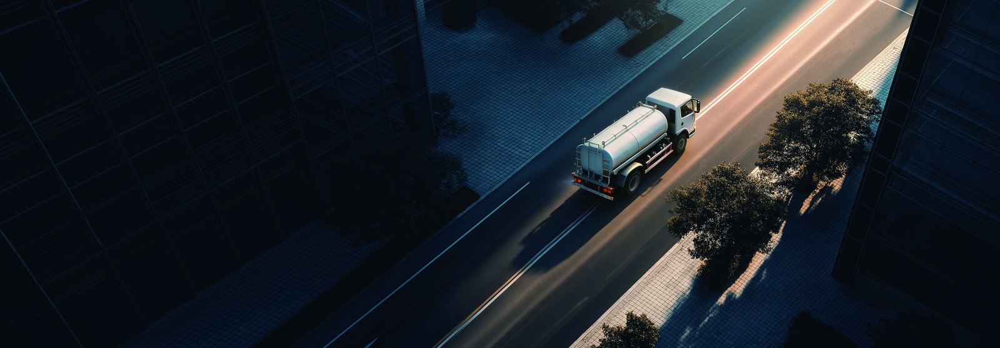

Thailand's Eastern Economic Corridor is the country's fast-moving consumer goods engine, and the KTH3 electric cargo truck is purpose-built for the multi-drop distribution that keeps Rayong and Laem Chabang supplied. With a 424 kWh CATL LFP battery and a LvKong motor at 360 kW, this EV truck is sized for the EEC's medium-duty loop where range, reloads and cost discipline decide contract renewals.
The Eastern Economic Corridor strings together factories, ports and distribution centers across Rayong, Chonburi and Chachoengsao. A typical FMCG loop leaves a DC, makes 30 to 60 drops at retailers and sub-depots, returns to reload, and repeats. That is dense, predictable, medium-distance duty where an electric truck's efficiency climbs as the stop count rises.
Operators following the Thailand electric truck market also see BOI incentives and emission zones nudging fleets toward electric, and an EEC distributor that can show a clean, quiet delivery profile strengthens its pitch to multinational FMCG clients with their own carbon targets.
The table below is the 424 kWh export specification. The pack covers a full day of multi-drop EEC loops with margin, and the motor sizing suits the mix of expressway running and urban final delivery.
| Parameter | KTH3 value |
|---|---|
| Battery chemistry | CATL LFP |
| Usable capacity | 424 kWh |
| Motor | LvKong PMSM, 360 kW |
| Peak torque | 2,400 Nm |
| Range (loaded, mixed) | 320 km |
| DC fast charge (20-80%) | approx 95 min |
| Battery swap time | 5-6 min |
| Battery warranty | 8 years / 4,500 cycles |
| Payload class | medium duty cargo |
| FOB reference price | $70k-$95k |
The 424 kWh pack delivers roughly 320 km of loaded mixed range, enough for two to three EEC loops before a top-up. For single-shift fleets, overnight depot charging suffices; for continuous distribution, a 5-6 minute battery swap removes the charge gap.
The KTH3's case is won on total cost of ownership across the contract, not on purchase price alone. Energy per kilometer sits well below diesel at Thai depot rates, and the stop-start profile means regeneration recovers meaningful energy at every delivery bay. Removed diesel maintenance, a quieter cab and predictable servicing through the LvKong drive unit all flow into the per-drop cost.
The 8-year or 4,500-cycle battery warranty covers the full first ownership window, so there is no mid-contract pack replacement surprise. For an FMCG distributor bidding a three-year client contract, that stability lets the per-drop cost be fixed and defended, which is exactly what procurement teams want to see.
A practical EEC depot pairs overnight charging with a DC fast charger for midday reloads, and the KTH3's swap capability lets a high-throughput DC run continuously.
Final delivery in the EEC often means tight retail bays and early-morning residential drops. The KTH3's quiet operation avoids the noise complaints a diesel draws, and instant low-speed torque makes curb pull-away smooth, which protects goods and reduces driver fatigue across a long multi-drop day.
The low pack mounting steadies the body in tight turns, and the simplified drivetrain means fewer roadside faults, which keeps the delivery promise to the client even in peak season.
An EEC distributor should start with a telemetry pilot on its busiest loop, because drop count and reload frequency, not just distance, drive the energy number for the KTH3. Two weeks of real data will confirm whether the 424 kWh pack covers two or three loops per shift and where the midday top-up lands in the driver's rest, so the charging plan is built on the actual Laem Chabang and Rayong pattern rather than an estimate of expressway range that ignores final delivery.
Depot readiness is the second step. Most EEC distribution centers have three-phase power, so the gap is usually a managed charger and a scheduling rule that caps daily cycling at 80% to protect pack life. Where continuous distribution runs, a battery swap cabinet is the cleaner answer than stacking DC chargers, and it keeps the same trucks rotating instead of buying spare units that sit idle outside peak FMCG season and inflate the per-drop cost the client sees.
Driver training is the third step and is often underestimated. Electric delivery is easier on the crew, but the habit of lift-and-regenerate braking has to be taught so the per-drop saving is realized rather than lost to aggressive acceleration. A short module on speed-set control and smooth pull-away pays back quickly in range, tire life and fewer incidents across a long multi-drop day serving retail and sub-depot bays in the corridor.
Financing the switch should be modeled on total cost of ownership across the client contract, not on sticker price. With the 8-year battery warranty removing the largest unknown, the per-drop case is stable enough to present to a finance committee, and the quiet urban profile is a contract-retention asset with multinational FMCG clients who track their own scope-three emissions and ask carriers for lower-emission distribution proof in the EEC.
Finally, phase the rollout and review BOI support. Replace the oldest diesel trucks first on the most regular loops, validate the charging plan against telemetry, then scale. Shaanxi Fenghan Trading provides the export and shipping documentation needed to land the KTH3 at a Thai port and configure it for local duty, including telematics and depot layout advice that shorten the learning curve for the operations team serving the Eastern Economic Corridor.
Before sign-off, weigh residual value. A 424 kWh CATL LFP pack with an 8-year warranty carries a defensible second-life value that a tired diesel cargo driveline lacks, and the telematics history from first ownership makes the unit easier to refinance or resell into the Thai used-EV market. Insurance for an electric truck is stabilizing as fleets demonstrate the lower fire risk of LFP chemistry, which quietly improves the per-drop cost case across an EEC distribution contract with a multinational FMCG client and a fixed service fee.
The quiet, zero-local-emission profile also reduces the noise and emission disputes that occasionally sideline diesel trucks in dense district bays, protecting contract continuity for the distributor. Combined with a stable cost per drop and full warranty cover, this is what turns a KTH3 pilot into a board-approved fleet standard rather than a one-off experiment. The risk math favors the electric truck on every axis a finance committee actually measures across a three-year EEC logistics agreement with volume commitments.
Growth in the Thailand electric truck market is being driven by the EEC's concentration of FMCG and auto logistics, where loops are dense and easy to model. The KTH3 at 424 kWh is a sensible entry because it matches the real EEC duty rather than over-specifying range a distribution loop never uses.
For a 2026 fleet plan, the KTH3 electric cargo truck gives Thai distributors a defensible per-drop TCO, a quiet urban profile and an 8-year battery warranty, which together make the switch from diesel a financeable, contract-grade decision.
Ready to electrify your fleet? Contact Shaanxi Fenghan Trading — authorized Dongfeng EV truck exporter. WhatsApp: +86 153 1943 1311 | Email: sales@fenghan-trade.com | dongfengevtrucks.com
🌐 Our Network: Fenghan Trade (SAGMOTO/SHACMAN Truck Export) · SAGMOTO cargo truck flatbed box stake